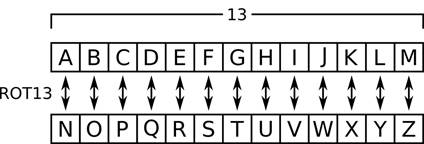

Prev - #40 Merging Two Sorted Lists | Table of Contents | Next - #42 Bubble Sort
rot13('Hello, world!') → 'Uryyb, jbeyq!'
rot13('Uryyb, jbeyq!') → 'Hello,
world!'

ROT 13 is a simple encryption cipher. The name “ROT 13” is short for “rotate 13.” It encrypts by replacing letters with letters that appear 13 characters down the alphabet: A is replaced with N, B is replaced with O, C is replaced with P, and so on. If this rotation of 13 letters goes passed the end of the alphabet, it “wraps around” the Z and continues from the start of the alphabet. Thus, X is replaced with K, Y is replaced with L, Z is replaced with M, and so on. Non-letter characters are left unencrypted.
The benefit of ROT 13 is that you can decrypt the encrypted text by running it through ROT 13 encryption again. This rotates the letter 26 times, returning us to the original letter. So “Hello, world!” encrypts to “Uryyb, jbeyq!” which in turn encrypts to “Hello, world!” There is no decryption algorithm; you decrypt encrypted text by encrypting it again. The ROT 13 algorithm isn’t secure for real-world cryptography. But it can be used to obfuscate text to prevent spoiling joke punch lines or puzzle solutions.
The following shows what each of the 26 letters encrypts to with ROT 13 once (from the top row to the middle row) and twice (from the middle row to the bottom row.)
A B C D E F G H I J K L M N O P Q R S T U V W X Y Z
▼ ▼ ▼ ▼ ▼ ▼ ▼ ▼ ▼ ▼ ▼ ▼ ▼ ▼ ▼ ▼ ▼ ▼ ▼ ▼ ▼ ▼ ▼ ▼ ▼ ▼
N O P Q R S T U V W X Y Z A B C D E F G H I J K L M
▼ ▼ ▼ ▼ ▼ ▼ ▼ ▼ ▼ ▼ ▼ ▼ ▼ ▼ ▼ ▼ ▼ ▼ ▼ ▼ ▼ ▼ ▼ ▼ ▼ ▼
A B C D E F G H I J K L M N O P Q R S T U V W X Y Z
Exercise Description
Write a rot13() function with a text parameter that returns the ROT 13 encrypted version
of text. Uppercase letters encrypt to uppercase
letters and lowercase letters encrypt to lowercase letters. For example, 'HELLO, world!' encrypts to 'URYYB,
jbeyq!' and 'hello, WORLD!' encrypts to 'uryyb, JBEYQ!'.
You may use the following Python functions and string methods as
part of your solution: ord(), chr(),
isalpha(), islower(), and
isupper().
These Python assert statements stop
the program if their condition is False. Copy them
to the bottom of your solution program. Your solution is correct if the following
assert statements’ conditions are all True:
assert rot13('Hello, world!') == 'Uryyb, jbeyq!'
assert rot13('Uryyb, jbeyq!') == 'Hello, world!'
assert rot13(rot13('Hello, world!')) == 'Hello, world!'
assert rot13('abcdefghijklmnopqrstuvwxyz') == 'nopqrstuvwxyzabcdefghijklm'
assert rot13('ABCDEFGHIJKLMNOPQRSTUVWXYZ') == 'NOPQRSTUVWXYZABCDEFGHIJKLM'
Try to write a solution based on the information in this description. If you still have trouble solving this exercise, read the Solution Design and Special Cases and Gotchas sections for additional hints.
Prerequisite concepts: strings, ord(),
chr(), for loops, Boolean
operators, islower(), isupper(),
augmented assignment operators
Solution Design
Instead of hard-coding every letter and its encrypted form, we
can rely on each letter’s Unicode code point integer. Code points were
discussed in Exercise #7, “ASCII Table.” The ord()
and chr() functions discussed in Exercise #7, “ASCII
Table” can translate from a letter string to integer and integer to letter
string, respectively.
The function starts with an encryptedText
variable set to an empty string that will store the encrypted result as we
encrypt each character. A for loop can loop over the
text parameter to encrypt each character. If this
character isn’t a letter, it’s added to the end of encryptedText
as-is without encryption.
Otherwise, we can pass the letter to ord()
to obtain its Unicode code point as an integer. Uppercase letters A to Z have
integers ranging from 65 up to and including 90. Lowercase letters a to z have
integers ranging from 97 up to and including 122. We need to reduce this by 26
to “wrap around” to the start of the alphabet.
For example, the letter 'S' has an
integer 83 (because ord('S')
returns 83) but adding 83 + 13
gives us 96, which is greater than the integer for Z
(ord('Z') returns 90). In
this case, we must subtract 26: 96
- 26 gives us the encrypted integer 70, and chr(70) returns 'F'. This is
how we can determine that 'S' encrypts to 'F' in the ROT 13 cipher.
Note that while an uppercase 'Z' has
the Unicode code point 90, the lowercase 'z' has the Unicode code point 122.
Special Cases and Gotchas
While you want to add 13 to the
Unicode code point integers of both uppercase and lowercase letters, when you
check if this addition results in a number larger than Z’s Unicode code point,
you must use the correct case of Z. Otherwise, your rot13()
function may determine that the lowercase 'a' (with
integer 97) is past uppercase 'Z'
(with integer 90) because 97
is greater than 90. You must compare lowercase
rotated letters with 122 (the integer of lowercase 'z') and uppercase rotated letters with 90 (the integer of uppercase 'Z').
All non-letter characters such as numbers, spaces, and
punctuation marks are added to the encrypted text unmodified. Be sure that your
rot13() function doesn’t accidentally drop them from
the returned string.
Now try to write a solution based on the information in the previous sections. If you still have trouble solving this exercise, read the Solution Template section for additional hints.
Solution Template
Try to first write a solution from scratch. But if you have difficulty, you can use the following partial program as a starting place. Copy the following code from https://invpy.com/rot13-template.py and paste it into your code editor. Replace the underscores with code to make a working program:
def rot13(text):
# Create an encryptedText variable to store the encrypted string:
encryptedText = ____
# Loop over each character in the text:
for character in text:
# If the character is not a letter, add it as-is to encryptedText:
if not character.____():
encryptedText += ____
# Otherwise calculate the letter's "rotated 13" letter:
else:
rotatedLetterOrdinal = ____(character) + 13
# If adding 13 pushes the letter past Z, subtract 26:
if ____.islower() and rotatedLetterOrdinal > ____:
rotatedLetterOrdinal -= ____
if ____.isupper() and rotatedLetterOrdinal > ____:
rotatedLetterOrdinal -= ____
# Add the encrypted letter to encryptedText:
encryptedText += ____(rotatedLetterOrdinal)
# Return the encrypted text:
return encryptedText
The complete solution for this exercise is given in Appendix A and https://invpy.com/rot13.py. You can view each step of this program as it runs under a debugger at https://invpy.com/rot13-debug/.
Further Reading
If you are interested in writing Python programs for encryption algorithms and code breaking, my book “Cracking Codes with Python” is freely available under a Creative Commons license at https://inventwithpython.com/cracking/.
Prev - #40 Merging Two Sorted Lists | Table of Contents | Next - #42 Bubble Sort